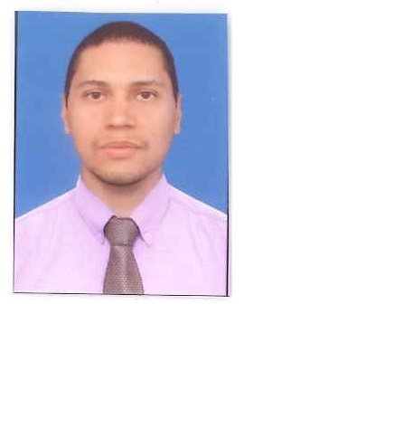

Soy Psicólogo egresado de la Universidad Cooperativa de Colombia con orientación cognitivo y humanista; tengo experiencia en el campo ocupacional clínico y organizacional de psicología.
En la actualidad me encuentro terminado un posgrado en administración en gerencia de proyectos, he adquirido habilidades de liderazgo y conocimientos técnicos para evaluar y ejecutar cualquier proyecto que se requiera ejecutar.
En el área organizacional específicamente en la selección de personal de todo tipo de perfiles incluyendo a operativos como auxiliares de Bodega, promotores de servicios, gurdas de seguridad, conductores de todo tipo de vehículos, agentes de Call Center y perfiles medios como asistentes administrativos, o coordinadores; además experiencia en visitas domiciliarias y estudios de confiabilidad.Poseo un alto sentido de responsabilidad, adecuadas relaciones interpersonales y disposición para aprender nuevos conocimientos.